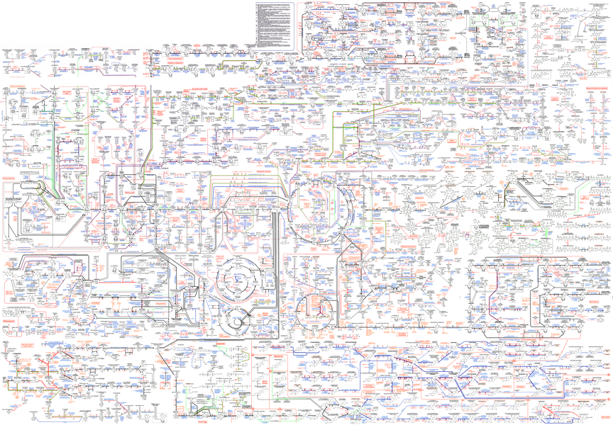

Players and Forces
2015-09-30
Conceptual goals
- Know the main chemical forces that undergird life
- How the four main classes of biomolecules differ in these properties
- and how these differences lead to their biological roles.
Skill goals
- Reason about the relative importance of different molecular forces in an aqueous environment
- Identify the ability to participate in different interactions from structure.
The citric acid cycle acts as a "buffer" for all metabolism
Citric acid cycle is central to all metabolism

The citric acid cycle:
- It's used for carbon oxidation
- The reduced products it generates ($NADH$ and $QH_{2}$) can be oxidized by oxidative phosphorylation to yield $ATP$
- Provides access to much higher energy yields for glucose than glycolysis...provided there is some "final $e^{-}$ acceptor" around.
- Generates useful intermediates used throughout metabolism
- It's a buffer for metabolites that assures a steady concentration of important precursor molecules